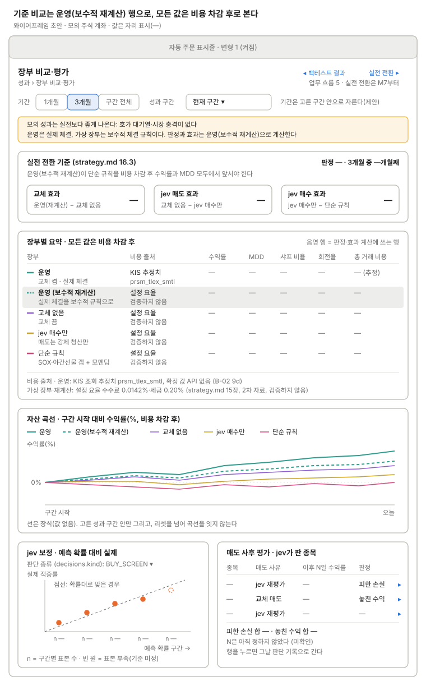

장부 비교·평가
장부 4개의 비용 차감 후 수익률·MDD, jev 보정, 매도 사후 평가를 본다(strategy.md 16장, Recharts).

위에서 성과 구간과 그 안의 기간을 고르면 판정 줄, 장부 4개의 요약 표와 자산 곡선이 같은 기준으로 바뀌고, 아래에서 jev 판단의 보정과 매도 결과를 따로 본다.
운영 장부는 실제 체결, 가상 장부는 보수적 체결 규칙이라 그대로 비교하면 운영에 유리하다. 그래서 운영 체결을 같은 규칙으로 다시 계산한 "운영(보수적 재계산)" 행을 요약 표에 두고, 16.3 판정과 세 효과(교체, jev 매도, jev 매수)는 이 행으로 계산한다. 요약 표는 장부마다 비용 출처(운영: KIS 조회 추정치 prsm_tlex_smtl / 가상 장부·재계산: 설정 요율 0.0142%·0.20%, 2차 자료라 검증하지 않음)를 보이고, 샤프 비율·회전율·총 거래 비용(16.2)을 함께 둔다. 자산 곡선은 구간 시작 대비 수익률(%)로 맞추고, 기간이 성과 구간 경계를 넘으면 구간 안으로 자른다(제안).
쓰는 공통 UI
상태
| 상태 | 보일 것 |
|---|---|
| 15:40 일일 평가 전 | 오늘 값은 아직 없다. 표·판정 줄·곡선은 어제 평가까지 보이고, 표 위에 "오늘 평가는 15:40 뒤"를 적는다 |
| 성과 구간 리셋 | 리셋 날 새 구간이 열리고 이전 구간은 구간 고르기로 따로 본다. 곡선은 리셋을 넘어 잇지 않는다. 새 구간이 3개월 미만이면 판정 줄은 "기간 부족" |
| 빈 기간 | 고른 기간에 평가 기록이 없으면 표 값은 "—", 곡선 자리에 "이 기간에 평가 기록이 없다"를 적는다 |
| jev 보정 표본 부족 | 구간마다 n을 적고, 기준에 못 미친 점은 빈 원(점선)으로 그린다. 기준 n은 미정 |
화면 규칙
- 데이터:
paper_books(NO_ROTATION/JEV_BUY_ONLY/RULE), 실제 계좌,account_epochs - 주의: 비용의 수수료·세금은 추정치다. 리셋으로 성과 구간이 끊기면 곡선을 잇지 않는다. 모의 성과는 실전보다 좋게 나온다